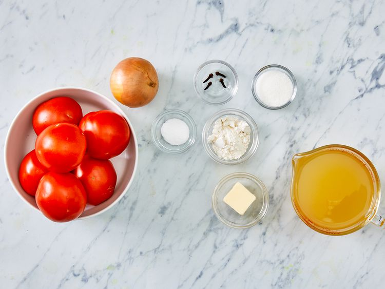
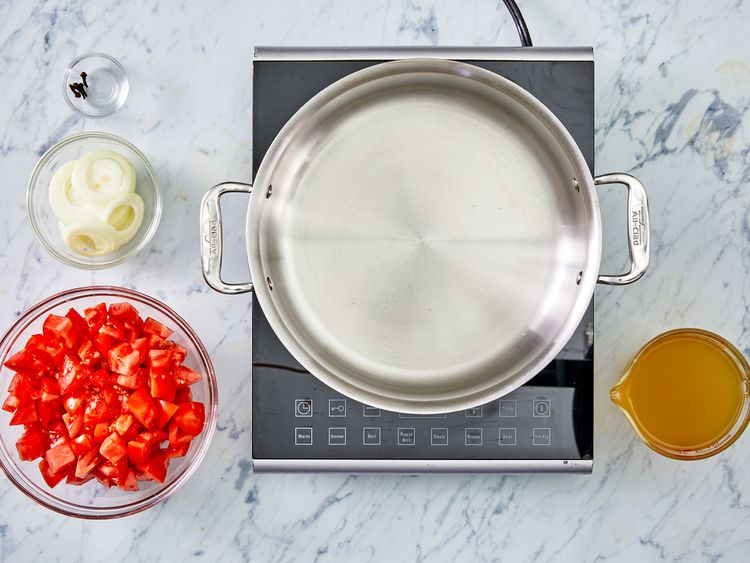
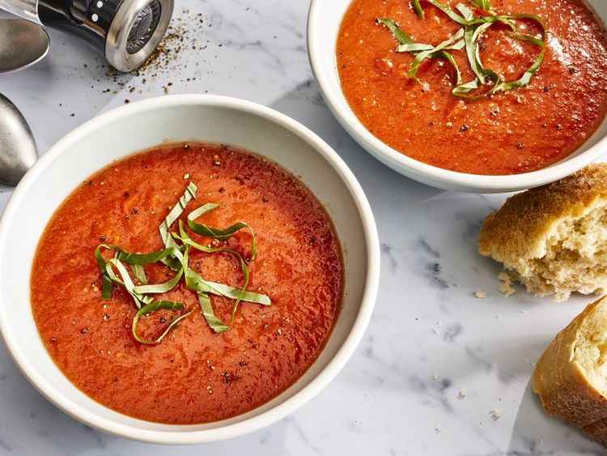

Fresh Tomato Soup!



Description
This simple, quick and easy recipe for homemade fresh tomato soup is perfect to make when tomatoes are ripe in gardens and farmers'
markets for a delicious summertime treat. One spoonful of tomato soup has the power to automatically transport you back to your childhood.
The tasty soup is the ultimate comfort food, especially when it's homemade.This tomato soup recipe uses fresh tomatoes and will remind you of
your mom's famous cooking. Sure the can of tomato soup works in a time crunch, but nothing beats the delicious flavors of a soup you made from scratch
with fresh ingredients. So say goodbye to canned soup forever and hello to your new favorite tomato soup recipe.
How to make it
Sometimes we're so hung up on the ease of using canned soup, that we forget making homemade soup is actually easy too. You'll find the full recipe below, but here's
a brief idea of what you can expect from this tomato soup recipe:
Tomato Soup Ingredients
- 4 cups chopped fresh tomatoes
- 1 slice onion
- 4 cloves garlic
- 2 cups chicken broth
- 2 tablespoons butter
- 2 tablespoons all-purpose flour
- 1 teaspoon salt
- 2 teaspoons white sugar, or to taste
How to make Tomato Soup Step-By-Step
How to start:
- Step 1Gather all ingredients.
- Step 2 In a stockpot, over medium heat, combine the tomatoes, large slice of onion, garlic cloves, and chicken broth.
Bring to a boil, and gently boil for about 20 minutes to blend all of the flavors.
- Step 3 Remove from heat and run the mixture through a food mill into a large bowl, or pan. Discard any stuff left over in the food mill.
- Step 4 In the now empty stockpot, melt the butter over medium heat. Stir in the flour to make a roux, cooking until the roux is a medium brown.
- Step 5 Gradually whisk in a bit of the tomato mixture, so that no lumps form, then stir in the rest.
- Step 6 Season with sugar and salt, and adjust to taste.
- Step 7 Serve hot and enjoy!
and voil'a !!!